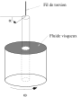
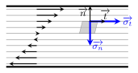
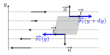
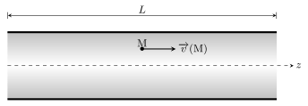
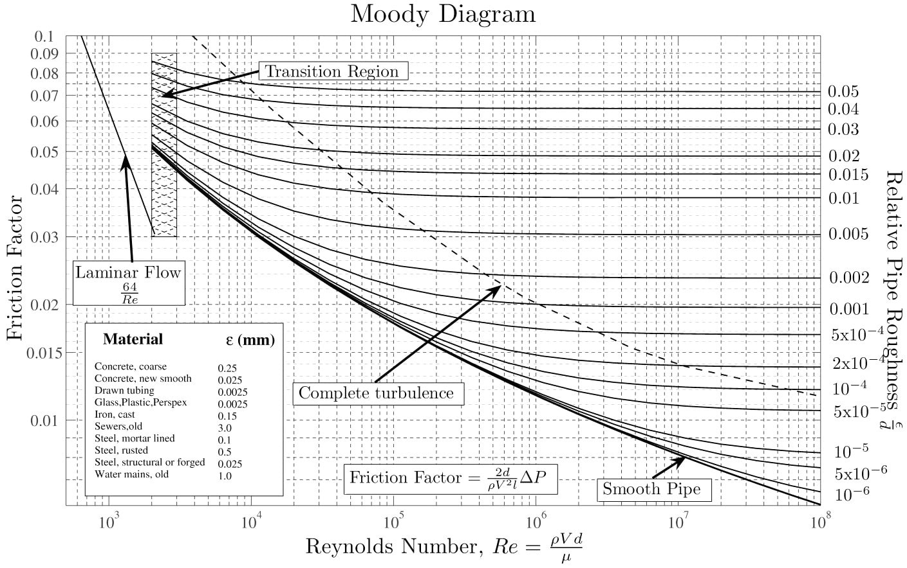
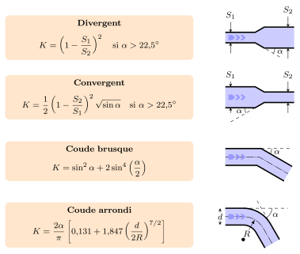
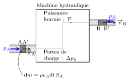
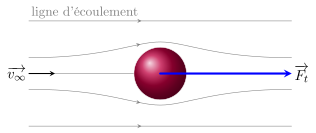
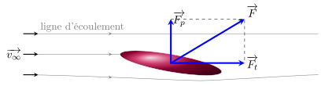

Dans un fluide parfait, la contrainte qui s’exerce sur une particule de fluide est toujours
perpendiculaire aux parois de celle-ci. Dans un fluide réel en écoulement, la contrainte
possède une composante tangentielle dite contrainte visqueuse.
Fluides newtoniens
Expérience de Couette
Considérons un fluide enfermé entre deux cylindres, l’un mobile, l’autre fixé via un fil de
torsion. On constate que lorsque la cavité cylindrique extérieure est mise en rotation à
la vitesse angulaire \(\omega\), le cylindre intérieur tourne d’un angle \(\alpha\) par
rapport à sa position d’équilibre.

Expérience de Couette.
Analysons en détail le phénomène.
La torsion du fil conduit à l’existence d’un couple dont les forces de pression ne
peuvent pas être responsables. On est donc obligé d’admettre l’existence d’efforts
tangentiels.
On observe que les particules de fluide adhèrent aux parois. Il existe donc un
gradient de vitesse au sein de l’écoulement.
Pour les fluides simples, l’angle \(\alpha\) augmente proportionnellement à
\(\omega\). Les efforts tangentiels augmentent donc proportionnellement au gradient de
vitesse.
Interprétation
L’expérience montre que, lors de l’écoulement d’un fluide, la pression ne suffit pas à
expliquer les phénomènes et qu’il convient d’introduire des forces tangentielles qui
s’opposent au mouvement du fluide. Ces forces, de type frottement, dues aux interactions
entre molécules du fluide, sont appelées forces de viscosité. La contrainte (force par unité
de surface) \(\overrightarrow{\sigma}\) qu’exerce une couche de fluide supérieure sur un
élément de surface d’une couche de fluide inférieure, s’écrit :
$$
\quad \overrightarrow{\sigma}_{1 \to 2} = \frac{\overrightarrow{\mathrm{d}F}}{\mathrm{d}S}
= \sigma_n\overrightarrow{n} + \sigma_t\overrightarrow{t}
$$
avec \(\sigma_n = -p\).

Contraintes internes dans le fluide.
Fluide newtonien
Entre deux couches successives de fluide en écoulement unidimensionnel à la vitesse
\(\overrightarrow{v}\), il existe des contraintes tangentielles à l’écoulement qui
accélèrent la couche la plus lente et ralentissent la couche la plus rapide. Par définition
d’un fluide newtonien, les forces visqueuses sont proportionnelles à la différence de
vitesse c’est-à-dire au gradient de vitesse.
$$
\quad \boxed{ \sigma_t = \eta \frac{\partial v}{\partial n} = \eta \dot{\gamma} }
$$
où \(\frac{\partial v}{\partial n}\) désigne le gradient de vitesse dans la direction
normale à la surface. De manière générale, la contrainte visqueuse varie comme la vitesse
de cisaillement \(\dot{\gamma}\). La constante de proportionnalité \(\eta\) est
caractéristique du fluide et désigne la viscosité dynamique du fluide.
Mesure de viscosité
L’analyse dimensionnelle de la relation donne :
$$
\quad [\eta] = \frac{[F]}{L^2}\frac{L}{[v]} = \frac{[F]}{L^2}T
$$
Ainsi, la viscosité est homogène à une pression multipliée par un temps. On l’exprime
indifféremment en pascal.seconde (\(\rm{Pa.s}\)) ou en poiseuille
(\(\rm{P\ell}\)).
Le viscosimètre est l’appareil de mesure de la viscosité. Différents types de viscosimètre
existent suivant le type de fluide utilisé. Pour les liquides, on utilise essentiellement le
viscosimètre de Couette ou le viscosimètre à tube capillaire.
Ordres de grandeur
Pour les liquides, la viscosité varie fortement avec la température (elle diminue lorsque la
température augmente). Pour des liquides purs, elle suit une loi du type :
$$
\quad \eta \propto \mathrm{e}^{b/T}
$$
Quant aux gaz, leur viscosité est plus difficile à mesurer car beaucoup plus faible que
celle des liquides. Sa détermination peut se faire à l’aide d’une :
mesure de vitesse (viscosimètre à bille roulante, viscosimètre à tube capillaire)
mesure de fréquence de résonance d’une onde de cisaillement (viscosimètre à cristal
piézo-électrique de torsion).
Elle dépend peu de la pression et augmente légèrement avec la température (à peu près comme
\(\sqrt{T}\)).
Quelques valeurs de viscosité.
Liquide (20 °C)
Viscosité (\(\rm{Pa.s}\))
Eau
\(1,0 \times 10^{-3}\)
Huile d’olive
\(0,84\)
Glycérine pure
\(1,5\)
Mercure
\(1,5 \times 10^{-3}\)
Gaz
Viscosité (\(\rm{Pa.s}\))
Vapeur d’eau (20 °C)
\(9,7 \times 10^{-6}\)
Air sec (20 °C)
\(18,2 \times 10^{-6}\)
\(\rm{He}\) (20 °C)
\(19,9 \times 10^{-6}\)
\(\rm{N_2}\) (20 °C)
\(17,7 \times 10^{-6}\)
Fluides non newtoniens
Le comportement newtonien (\(\sigma = \eta \dot{\gamma}\)) s’observe :
dans tous les gaz
dansles liquides simples constitués de petites molécules (l’eau par exemple)
dans les solutions contenant des ions ou molécules à symétrie sphérique
Cependant la rhéologie (l’étude du comportement des fluides en écoulement) montre qu’il
existe des fluides pour lesquels la relation entre contrainte tangentielle et cisaillement
est plus complexe. Certains fluides vérifient la relation :
$$
\quad \sigma_t = \eta(\dot{\gamma}) \dot{\gamma}
$$
où \(\eta(\dot{\gamma})\) représente une viscosité apparente.
Lorsque \(\eta(\dot{\gamma})\) diminue avec \(\dot{\gamma}\), le fluide coule d’autant plus
facilement qu’il est cisaillé. On parle alors de fluide rhéofluidifiant (sang, polymère
fondu, etc.). Le comportement inverse est désigné par le terme rhéoépaississant (amidon +
eau). Il existe également des liquides, comme les peintures, qui ne coulent que si la
contrainte dépasse un valeur seuil.
Comportement visco-élastique
Tout fluide se caractérise par un temps de relaxation viscoélastique \(\tau_{ve}\).
Lorsqu’un fluide est soumis à une contrainte, on distingue trois types de comportement en
fonction du temps d’observation \(t\) :
si \(t \ll \tau_{ve}\) le fluide adopte un comportement élastique (déformation
proportionnelle à la contrainte)
si \(t \gg \tau_{ve}\) le fluide adopte un comportement visqueux (vitesse de
cisaillement proportionnelle à la contrainte \(\sigma = \eta \dot{\gamma}\))
si \(t \simeq \tau_{ve}\) le comportement est alors plus complexe et il est dit
visco-élastique
C’est pourquoi, du point de vue mécanique, la distinction entre un solide et un liquide est
artificielle. Ce que l’on appelle communément un liquide est un fluide de petit temps de
relaxation (\(\tau_{ve} = 1\,\rm{ns}\) pour l’eau) et ce que l’on appelle un solide peut
être vu comme un fluide de grand temps de relaxation (\(\tau_{ve} = 10^6\,\)ans pour le
manteau de la croûte terrestre). \(\tau_{ve}\) dépend fortement de la température ce qui
confère à certains systèmes un comportement fluide ou solide suivant la température (bitume
par exemple).
Un exemple de fluide viscoélastique est la pâte de silicone connue sous le nom de
silly-putty. Une boule de silly-putty rebondit sur le sol comme une balle
élastique (aux temps courts) mais s’étale comme un fluide visqueux (aux temps longs) si on
la pose sur une surface horizontale.
Dynamique d’un écoulement visqueux
Lorsque le fluide est newtonien et incompressible, les équations de Newton appliquées à
chaque particule de fluide prennent la forme des équations de Navier-Stokes.
Bilan des forces
Plaçons nous dans un référentiel galiléen et effectuons un bilan des forces sur une
particule de fluide située en \(M\) à l’instant \(t\), de masse \(\mathrm{d}m =
\rho(M,t)\mathrm{d}\tau\). En plus des forces de pression et des forces extérieures
volumiques, il faut ajouter la résultante des forces visqueuses :
$$
\quad \mathrm{d}\overrightarrow{F} =
\left( \overrightarrow{f_V}{}^{ext} - \overrightarrow{\nabla}p \right)\mathrm{d}\tau
+ \mathrm{d}\overrightarrow{F_{\eta}}
$$
L’expression de \(\mathrm{d}\overrightarrow{F_{\eta}}\) est en général assez compliquée mais
elle se simplifie dans le cas des fluides newtoniens et incompressibles.
Cas d’un écoulement parallèle unidimensionnel
Calculons la résultante des forces visqueuses dans le cas particulier simple d’un écoulement
suivant \((O_x)\) avec un gradient de vitesse suivant \((O_y)\) :
$$
\quad \overrightarrow{v} = v(y)\overrightarrow{u_x}
$$

Bilan des forces de viscosité sur un élément de fluide.
On remarque ici que \(\mathrm{div} \overrightarrow{v} = 0\). L’écoulement est donc bien
incompressible. Dans ce cas, la résultante des forces visqueuses s’exerçant sur une
particule de fluide, s’écrit :
$$
\quad \mathrm{d}\overrightarrow{F_{\eta}} =
\eta \left[ \frac{\mathrm{d}v}{\mathrm{d}y}(y + \mathrm{d}y)
-\frac{\mathrm{d}v}{\mathrm{d}y}(y) \right]
\mathrm{d}x\mathrm{d}z \overrightarrow{u_x}
= \eta \frac{\mathrm{d}^2\overrightarrow{v}}{\mathrm{d}y^2}\mathrm{d}\tau
$$
On voit apparaître une force volumique qui s’exprime comme le laplacien de la vitesse.
Cas général
La formule obtenue dans un cas particulier se généralise aux écoulements incompressibles des
fluides newtoniens. On admettra que pour un fluide newtonien incompressible, la résultante
des forces visqueuses s’écrit :
$$
\quad \boxed{ \mathrm{d}\overrightarrow{F_{\eta}}
= \eta \Delta \overrightarrow{v} \mathrm{d}\tau }
$$
Équation de Navier-Stokes
D’après la seconde loi de Newton appliquée à une particule de fluide, on a :
$$
\quad \rho\mathrm{d}\tau\frac{\mathrm{D}\overrightarrow{v}}{\mathrm{D}t} =
- \overrightarrow{\nabla}p\mathrm{d}\tau + \overrightarrow{f_V}{}^{ext}\mathrm{d}\tau
+ \mathrm{d}\overrightarrow{F_{\eta}}
$$
avec \(\mathrm{d}\overrightarrow{F_{\eta}}= \eta \Delta \overrightarrow{v} \mathrm{d}\tau\).
En divisant par \(\mathrm{d}\tau\), on obtient l’équation de Navier-Stokes.
Pour un fluide incompressible newtonien, la dynamique de l’écoulement vérifie
l’équation :
$$
\quad \boxed{
\rho \left[ \frac{\partial \overrightarrow{v}}{\partial t}
+ \left( \overrightarrow{v} \cdot \overrightarrow{\nabla} \right) \overrightarrow{v}
\right] =
-\overrightarrow{\nabla}p + \overrightarrow{f_V}{}^{ext} + \eta\Delta\overrightarrow{v}}
$$
Il s’agit donc d’une équation aux dérivées partielles du second ordre et non linéaire. Cette
équation recèle encore quelques mystères qui résistent à la sagacité des mathématiciens.
Conditions aux limites
L’équation de Navier-Stokes étant une équation du second ordre, sa résolution introduit deux
constantes d’intégration pour la pression \(p\) et pour la vitesse \(\overrightarrow{v}\).
On les détermine en appliquant les conditions aux limites suivantes :
continuité de la vitesse à la traversée d’une interface
continuité de la contrainte normale et donc de la pression
continuité de la contrainte tangentielle
Le nombre de Reynolds
La complexité provient essentiellement de la présence, dans l’équation de Navier-Stokes,
d’un terme non linéaire le terme convectif et d’un terme du
second ordre le terme de viscosité. Dans de nombreux cas, on
peut négliger l’un des deux termes devant l’autre. On définit alors un facteur sans
dimension, qui estime l’importance du terme convectif devant le terme de viscosité. On peut
estimer l’ordre de grandeur du terme convectif et du terme visqueux à partir de l’échelle
caractéristique \(D\) du problème, de la vitesse moyenne d’écoulement \(v\), de la masse
volumique \(\rho\) du fluide et de sa viscosité \(\eta\).
$$
\quad \|\rho \left( \overrightarrow{v} \cdot \overrightarrow{\nabla} \right)
\overrightarrow{v} \| \approx \rho \frac{v^2}{D}
$$
et
$$
\quad \| \eta \Delta \overrightarrow{v} \| \approx \eta \frac{v}{D^2}
$$
D’où le nombre sans dimension appelé nombre de Reynolds :
$$
\quad \boxed{ R_e = \frac{\text{terme convectif}}{\text{terme visqueux}}
= \frac{\rho v D}{\eta} }
$$
Ce nombre joue un rôle très important en mécanique des fluides car il permet de distinguer
trois types d’écoulement.
L’écoulement à petit nombre de Reynolds \(R_e \ll 1 \)
L’écoulement est laminaire et essentiellement gouverné par la viscosité. Le terme d’inertie
est négligeable et l’équation de Navier-Stokes devient :
$$
\quad \rho \frac{\partial \overrightarrow{v}}{\partial t} =
-\overrightarrow{\nabla}p + \overrightarrow{f_V}{}^{ext} + \eta\Delta\overrightarrow{v}
$$
Cette équation est linéaire. Si l’écoulement est permanent, on obtient le régime de Stokes.
L’écoulement à grand nombre de Reynolds \(R_e \gg 1 \)
On montre dans ce cas que les effets visqueux sont concentrés sur les bords, dans une fine
couche appelée couche limite, et dans le sillage des obstacles. Hors de ces zones, le terme
visqueux est négligeable et l’on retrouve l’équation d’Euler :
$$
\quad
\rho \left[ \frac{\partial \overrightarrow{v}}{\partial t}
+ \left( \overrightarrow{v} \cdot \overrightarrow{\nabla} \right) \overrightarrow{v}
\right] = -\overrightarrow{\nabla}p(M,t) + \overrightarrow{f_V}{}^{ext}
$$
Écoulement turbulent
La viscosité stabilise et régularise les écoulements de façon générale. Ainsi, quand le
nombre de Reynolds augmente le régime laminaire devient instable voire turbulent. La
transition entre le régime laminaire et turbulent se produit dans une certaine gamme de
valeur du nombre de Reynolds qui dépend du problème. On peut retenir qu’en général, lorsque
\(R_e \gt 10^5\), l’écoulement devient turbulent, c’est-à-dire que la vitesse en un point
M varie dans le temps de façon erratique. Dans ce cas, le problème étant analytiquement
insoluble, on utilise souvent des lois phénoménologiques associées à une analyse
dimensionnelle.
Exemple
Quel est l’ordre de grandeur du nombre de Reynolds associé à l’écoulement autour d’une balle
de tennis allant à la vitesse \(v = 100\,\rm{km.h^{-1}}\) dans l’air ?
Le diamètre d’une balle de tennis est de l’ordre de 7 cm, la masse volumique de l’air
de l’ordre de \(1\,\rm{kg.m^{-3}}\) et sa viscosité de l’ordre de \(2\times 10^{-5}\) de
sorte que :
$$
\quad R_e = \frac{\rho v D}{\eta} = \frac{1 \times 100/3,6 \times 0,07}{2\times 10^{-5}}
\simeq 10^5
$$
L’écoulement est donc turbulent.
Pertes de charge
Loi de Poiseuille
On s’intéresse à l’écoulement d’un fluide visqueux dans un long tube cylindrique de rayon
\(R\) et de longueur \(L \gg R\). Le tube est horizontal (orienté suivant \(Oz\)) et
l’écoulement est assuré grâce à l’existence d’une différence de pression \(\Delta p\) entre
l’entrée du tube et la sortie du tube.

Écoulement de Poiseuille. Position du problème.
Hypothèses de travail
On fait les hypothèses suivantes :
L’écoulement est permanent donc \(\frac{\partial \overrightarrow{v}}
{\partial t} = \overrightarrow{0}\)
L’écoulement est incompressible, par conséquent \(\mathrm{div}\overrightarrow{v}
=0\)
Le nombre de Reynolds est suffisamment petit pour supposer un régime d’écoulement
laminaire. En pratique, on considère que c’est le cas, quand \(R_e \lt 2000\)
L’écoulement est parallèle à \(Oz\) et invariant par rotation autour de l’axe \(Oz\),
d’où \(\overrightarrow{v} = v(r,z)\overrightarrow{u_z}\)
Enfin, on néglige la pesanteur car \(\rho g R \ll \Delta p\)
Calcul du champ de vitesse
Commençons par écrire l’équation de continuité :
$$
\quad \mathrm{div}\overrightarrow{v} =
\frac{\partial(rv_r)}{r\partial r}
+\frac{\partial(v_{\theta})}{r\partial \theta}
+\frac{\partial (v_z)}{\partial z} = 0 = \frac{\partial (v_z)}{\partial z}
\Rightarrow \overrightarrow{v} = v(r)\overrightarrow{u_z}
$$
La vitesse ne dépend pas de \(z\).
Calculons l’accélération :
$$
\quad \overrightarrow{a}(M,t) = \frac{\partial(\overrightarrow{v})}{\partial t}
+ v_z \frac{\partial}{\partial z} v_z(r) \overrightarrow{u_z} = \overrightarrow{0}
$$
L’accélération est nulle. En effet, les lignes de champ sont des droites horizontales et se
confondent avec la trajectoire des particules (régime stationnaire). Or si la vitesse ne
dépend pas de \(z\) cela signifie que les particules de fluide se déplacent avec une vitesse
constante en direction et en intensité. L’accélération est donc nulle. On peut aussi ajouter
que chaque particule de fluide est soumise à deux forces qui se compensent : les
forces de pression et les forces de viscosité. Sans force de pression, c’est-à-dire sans
différence de pression, il ne peut pas avoir d’écoulement stationnaire.
L’équation de Navier-Stokes se réduit donc à l’équation de Stokes :
\(\overrightarrow{\nabla}p = \eta\Delta\overrightarrow{v}\). Projetons cette relation dans
la base cylindrique :
$$
\quad \left| \begin{aligned}
\frac{\partial p}{\partial r} &= 0 \\
\frac{\partial p}{r \partial \theta } &= 0 \\
\frac{\partial p}{\partial z} &= \eta \frac{1}{r} \frac{\mathrm{d}}{\mathrm{d}r}
\left( r \frac{\mathrm{d}v}{\mathrm{d}r} \right)
\end{aligned} \right.
$$
d’où
$$
\quad \frac{\mathrm{d} p}{\mathrm{d} z} =
\eta \frac{1}{r} \frac{\mathrm{d}}{\mathrm{d}r}
\left( r \frac{\mathrm{d}v}{\mathrm{d}r} \right)
$$
Ainsi, la pression ne dépend que de \(z\).
Le terme de gauche de la dernière équation ne dépend donc que de \(z\) alors que celui de
droite ne dépend que de \(r\). Cette équation apparemment paradoxale se résout si les deux
termes sont constants.
$$
\quad \frac{\mathrm{d} p}{\mathrm{d} z} = K = \frac{\Delta p}{L} =
\eta \frac{1}{r} \frac{\mathrm{d}}{\mathrm{d}r}
\left( r \frac{\mathrm{d}v}{\mathrm{d}r} \right)
$$
où \(\Delta p = p_1 - p_2\) est la différence de pression entre l’entrée et la sortie.
En intégrant deux fois on obtient :
$$
\quad v(r) = -\frac{\Delta p}{4 \eta L} r^2 + C_1 \mathrm{ln}r + C_2
$$
où \(C_1\) et \(C_2\) sont deux constantes d’intégration.
La vitesse doit être définie en \(r=0\) ce qui implique \(C_1 = 0\).
Enfin, les conditions aux limites imposent \(v(R)=0\) d’où :
$$
\quad v(r) = \frac{\Delta p}{4 \eta L} \left( R^2 - r^2 \right)
$$
Le profil des vitesses est parabolique.
Profil de vitesse.
Calcul du débit volumique
Le débit volumique est le flux du vecteur vitesse à travers une section de la
canalisation :
$$
\quad Q_V = \iint \overrightarrow{v} \mathrm{d} \overrightarrow{S}
= \int_0^R v(r) 2 \pi r \mathrm{d}r
= \frac{\pi R^4}{8 \eta}\frac{\Delta p}{L}
$$
Ainsi, la différence de pression est directement reliée au débit volumique par la formule de
Poiseuille :
$$
\quad \boxed{ \Delta p = \frac{8 \eta L}{\pi R^4} Q_V }
$$
Analogie électrique
On peut faire une analogie avec la conduction électrique et définir une résistance
hydraulique \(R_H\) analogue de la résistance électrique :
Concepts électriques
Concepts hydrauliques
Potentiel \(V\)
Pression \(p\)
ddp \(U = V_1 - V_2\)
Différence de pression \(\Delta p\)
Intensité du courant électrique \(I\)
Débit volumique \(Q_V\)
Loi d’Ohm \(U=RI\)
Loi de Poiseuille \(\Delta p = R_H Q_V\)
Notion de perte de charge
Définition :
La perte de charge est la pression supplémentaire qu’il faut imposer entre les extrémités
d’une canalisation pour assurer un écoulement stationnaire et compenser le frottement
visqueux. Deux termes entrent dans le calcul des pertes de charge :
La perte de charge en ligne dite perte de charge régulière due aux frottements le long
du trajet.
La perte de charge singulière due à la présence d’obstacles localisés tels que les
coudes, les robinets, les vannes, les modifications brutales de section etc.
La perte de charge sera notée \(\Delta p_{\eta}\) et s’exprime en \(\rm{Pa}\).
Essayons de donner une forme générale à l’expression de la perte de charge dans une
canalisation à l’aide d’une analyse dimensionnelle. Pour cela, utilisons le théorème
\(\Pi\).
Théorème \(\Pi\) :
Le théorème \(\Pi\) ou théorème de Vashy-Buckingham est le théorème fondamental de l’analyse
dimensionnelle. Supposons que nous cherchions une relation entre \(n\) grandeurs physiques
\(g_{i=1 \dots n}\) que l’on considère pertinentes pour décrire un phénomène. Notons \(k\)
le nombre de dimensions fondamentales utilisées par ces grandeurs (\(k \le 7\)).
Il existe alors \((n−k)\) produits sans dimension notées \(\pi_i\) tels que
\(f(\pi_1, \dots, \pi_{n-k} ) = 0\).
Considérons une conduite de longueur \(L\), de diamètre \(D\) traversée par un fluide de
viscosité \(\eta\) et de masse volumique \(\rho\) circulant à la vitesse moyenne
\(\bar{v}\). Supposons qu’il existe une relation entre \(\Delta p_{\eta}\), \(L\), \(D\),
\(\rho\), \(\eta\) et \(\bar{v}\).
Grandeurs
\(L\)
\(D\)
\(\rho\)
\(\eta\)
\(\Delta p_{\eta}\)
\(\bar{v}\)
Dimensions
\(\rm{L}\)
\(\rm{L}\)
\(\rm{ML^{-3}}\)
\(\rm{ML^{-1}T^{-1}}\)
\(\rm{ML^{-1}T^{-2}}\)
\(\rm{LT^{-1}}\)
On a \(n=6\) grandeurs et \(k=3\) dimensions différentes. D’après le théorème \(\Pi\), il
existe trois nombres sans dimensions \(\pi_1\), \(\pi_2\) et \(\pi_3\) tels que
\(f(\pi_1,\pi_2,\pi_3)=0\). Fabriquons donc trois nombres indépendants sans
dimension :
\(L\) et \(D\) étant de même dimension, leur rapport est adimensionné :
\(\pi_1=\frac{L}{D}\)
le théorème de Bernoulli nous enseigne que \(\frac{1}{2}\rho\bar{v}^2\) est homogène à
une pression, ainsi \(\pi_2=\frac{\Delta p_{\eta}}{1/2\rho\bar{v}^2}\)
enfin, on sait que le nombre de Reynolds est sans dimension, ce sera
\(\pi_3=R_e=\frac{\rho\bar{v}D}{\eta}\)
Ces trois nombres sont liés par une loi.
$$
\quad \pi_2=\frac{\Delta p_{\eta}}{1/2\rho\bar{v}^2} = f(\pi_1,R_e)
$$
Par ailleurs, l’expérience montre que la perte de charge régulière \(\Delta p_{\eta}\) est
proportionnelle à \(L\). Autrement dit, \(f(\pi_1,R_e) = \pi_1\lambda(R_e)\) d’où :
$$
\quad \boxed{ \Delta p_{\eta} = \lambda(R_e)\frac{1}{2}\rho\bar{v}^2 \frac{L}{D} }
$$
Cette relation est appelée équation de Darcy-Weisbach. Le facteur adimensionné \(\lambda\)
désigne le coefficient de perte de charge régulière et ne dépend que du nombre de
Reynolds pour une canalisation lisse. Dans le cas d’une canalisation rugueuse, un quatrième
nombre sans dimension intervient : la rugosité relative \(\epsilon/D\) qui mesure le
rapport de la hauteur moyenne des aspérités de la paroi interne de la conduite sur son
diamètre interne. La valeur de \(\lambda\) peut être obtenue à l’aide d’abaque comme le
diagramme de Moody.

Diagramme de Moody.
Perte de charge régulière en régime laminaire
En régime laminaire, on remarque sur le diagramme de Moody que pour \(R_e \lt 2000\), le
coefficient de perte de charge régulière \(\lambda\) suit une loi de puissance (ce qui donne
une droite avec une échelle logarithmique). En effet, en régime laminaire, la perte de
charge est donnée par la formule de Poiseuille :
$$
\quad \Delta p_{\eta} = Q_V \frac{8 \eta L}{\pi R^4}
= \bar{v}\pi R^2\frac{8 \eta L}{\pi R^4}
= 32 \eta \bar{v} \frac{L}{D^2}
$$
Or le nombre de Reynolds de cet écoulement laminaire s’écrit :
$$
\quad R_e = \frac{\rho\bar{v}D}{\eta} \Rightarrow \eta = \frac{\rho\bar{v}D}{R_e}
$$
En régime turbulent, le coefficient de perte de charge régulière \(\lambda\) augmente
brutalement et pour les grands nombres de Reynolds, le coefficient de perte de charge
conserve une valeur constante qui ne dépend que de la rugosité relative de la conduite. Dans
ce cas, les pertes de charge varient comme le carré du débit. En conclusion, pour diminuer
l’ensemble des pertes de charge dans une canalisation, afin de diminuer les coûts de
fonctionnement dus aux pompes, il faut, quand c’est possible :
diminuer la longueur de canalisation
diminuer le nombre d’accidents sur la canalisation
diminuer le débit de circulation
augmenter le diamètre des canalisations
faire circuler des liquides le moins visqueux possible
utiliser des matériaux de faible rugosité
Pertes de charges singulières
Lorsque dans une conduite, l’écoulement subit de brusques variations de section ou de
direction, il se produit des pertes de charges dites singulières. Elles sont données
par la formule
De la même manière, on peut exprimer les pertes de charge singulières comme suit :
$$
\quad \Delta p_s = \xi \frac{1}{2}\rho {v_\text{inc}}^2
$$
où \(\xi\) est le coefficient de perte de charge singulière et \(v_\text{inc}\) est
la vitesse moyenne incidente du fluide arrivant sur l’obstacle. Il existe également des
tables donnant \(\xi\) en fonction du type d’obstacle.

Coefficients de perte de charge singulière sur quelques géométries.
Théorème de Bernoulli généralisé
Nous avons vu dans le chapitre consacré aux fluides parfaits, que dans le champ de
pesanteur, un fluide incompressible en écoulement stationnaire voit la quantité
\(p + \rho \frac{v^2}{2} + \rho g z\) se conserver le long d’une ligne de courant ce qui
traduit la conservation de l’énergie. Voyons comment s’exprime le bilan d’énergie dans le
cas d’un fluide réel en écoulement stationnaire dans une conduite en tenant compte des
échanges mécaniques avec des machines hydrauliques.
Considérons un fluide en écoulement stationnaire et incompressible dans un système de
conduites où il traverse des machines hydrauliques avec lesquelles il peut échanger de
l’énergie :
des pompes donneront de l’énergie mécanique au fluide
des turbines recevront de la part du fluide de l’énergie mécanique
Si l’on note \(\mathcal{P}\) la puissance échangée avec le fluide, on a \(\mathcal{P}\gt 0\)
pour les pompes et \(\mathcal{P} \lt 0\) pour les turbines.

Écoulement stationnaire dans un système de conduites.
Considérons comme système, le fluide situé dans la conduite entre \(A\) et \(B\) à l’instant
\(t\) et entre \(A^{\prime}\) et \(B^{\prime}\) à l’instant \(t+\mathrm{d}t\). Pendant
\(\mathrm{d}t\), la masse transférée est :
$$
\quad \mathrm{d}m = Q_m \mathrm{d}t = \rho Q_V \mathrm{d}t
$$
Le débit massique est uniforme le long de la canalisation puisqu’en régime
permanent :
$$
\quad \mathrm{div} \overrightarrow{v} = 0 \Rightarrow
\iint_{S_1} \rho \overrightarrow{v} \cdot \overrightarrow{\mathrm{d}S}
= \iint_{S_2} \rho \overrightarrow{v} \cdot \overrightarrow{\mathrm{d}S}
$$
Pour simplifier on considère que les grandeurs physiques sont uniformes sur la section
droite de la conduite.
Le théorème de l’énergie cinétique donne :
$$
\quad \mathrm{d}\mathcal{E}_c = \mathcal{E}_c(t+\mathrm{d}t) - \mathcal{E}_c(t) = \delta W
$$
avec \(\delta W\) le travail de toutes les forces (extérieures et intérieures) s’exerçant
sur le système.
Tout d’abord, le régime étant permanent, la portion de fluide située entre \(A^{\prime}\) et
\(B\) conserve son énergie cinétique de sorte que :
$$
\quad \mathcal{E}_c(t+\mathrm{d}t) - \mathcal{E}_c(t) =
\mathcal{E}_c^{BB^{\prime}} - \mathcal{E}_c^{AA^{\prime}} =
\frac{1}{2}Q_m\mathrm{d}t\left({v_B}^2 - {v_A}^2 \right)
$$
Par ailleurs, les forces de pesanteur travaillent d’où le transfert mécanique :
$$
\quad \mathrm{d} W_g = -Q_m \mathrm{d}t g (z_B - z_A)
$$
Les machines hydrauliques fournissent une puissance mécanique \(\mathcal{P}\) de sorte que
le transfert mécanique effectué pendant la durée \(\mathrm{d}t\) s’écrit :
$$
\quad \delta W_{méca} = \mathcal{P} \mathrm{d}t
$$
Quant aux forces de pression, leur travail s’exprime par :
$$
\quad \delta W_p = -p^{ext} \mathrm{d}V = p_A Q_V \mathrm{d}t - p_B Q_V \mathrm{d}t
$$
Le fluide est également le siège de forces intérieures. Or, l’écoulement étant
incompressible, les particules de fluide se déforment sans changer de volume ce qui explique
que les forces de pression interne ne travaillent pas. Par contre, le fluide est le siège
d’un travail résistant \(\delta W_{\eta}\) des forces visqueuses. Par définition de la perte
de charge, on a :
$$
\quad \boxed{ \delta W_{\eta} = - Q_V \Delta p_{\eta} \mathrm{d}t }
$$
Finalement le théorème de l’énergie cinétique donne la relation de Bernoulli
généralisée :
$$
\quad \boxed{ \rho \frac{{v_B}^2}{2} + \rho g z_B + p_B =
\rho \frac{{v_A}^2}{2} + \rho g z_A + p_A + \mathcal{P}/Q_V - \Delta p_{\eta} }
$$
Notons au passage que l’on retrouve la relation de Bernoulli vu dans le chapitre sur les
fluides parfaits à condition de faire \(\mathcal{P} = 0\) et \(\Delta p_{\eta} = 0\).
Traînée et portance
Si l’on met de coté la poussée d’Archimède, la force que ressent un solide plongé dans un
écoulement stationnaire tridimensionnelle est nulle si le fluide n’est pas visqueux. En
revanche, l’écoulement visqueux autour d’un obstacle solide produit une force qui présente
deux composantes : la composante dans le sens de l’écoulement est appelée force de
traînée, la composante perpendiculaire est la force de portance.
Formule de Stokes
Stokes s’est intéressé à la force de traînée qu’un écoulement visqueux produit autour d’une
sphère. Il s’est placé dans le cas où l’écoulement est gouverné par la viscosité
c’est-à-dire pour les petits nombres de Reynolds.

Traînée sur un obstacle sphérique immobile.
La résolution complète est assez longue et nous allons nous contenter de la solution sans
chercher à la justifier. Stokes obtient qu’une sphère de rayon \(r\), immobile, soumise à un
écoulement permanent incompressible et visqueux, pour \(R_e \ll 1\), ressent une force de
traînée \(\overrightarrow{F_t}\) proportionnelle à la vitesse d’écoulement et à la taille de
la sphère :
$$
\quad \boxed{ \overrightarrow{F_t} = 6 \pi \eta r \overrightarrow{v_{\infty}} }
$$
où \(\overrightarrow{v_{\infty}}\) représente la vitesse de l’écoulement par rapport à la
sphère et loin de la sphère. Cette force de trainée est liée d’une part à un champ de
pression plus important en avant de la bille et d’autre part aux forces visqueuses.
Si l’on étudie la chute d’une bille sphérique dans un fluide visqueux au repos (loin de la
bille), il faut écrire :
$$
\quad \overrightarrow{F_t} = -6 \pi \eta r \overrightarrow{v}
$$
où \(\overrightarrow{v}\) représente la vitesse de la bille dans le référentiel du
laboratoire.
Cette loi est vérifiée avec une précision meilleure que 1 % pour \(R_e \lt 0,3\).
Cette contrainte reste cependant assez forte. En effet, pour une bille de 1 cm de
diamètre tombant dans l’air cela impose \( v \lt 0,5\,\rm{mm.s^{-1}} \) ce qui signifie que
la loi du frottement linéaire n’est pas valable (sauf au tout début) dans ce cas. Par contre
si la chute s’effectue dans un liquide visqueux tel le glycérol (grosso modo mille fois plus
dense que l’air et un million de fois plus visqueux), la contrainte devient \( v \lt 0,5\,
\rm{m.s^{-1}} \). Dans ce cas, la loi de Stokes peut être utilisée si la bille n’est pas
trop pesante.
Analyse dimensionnelle
L’analyse précédente n’est valable qu’à petit nombre de Reynolds et pour un obstacle
sphérique. Plaçons un obstacle quelconque dans un écoulement stationnaire de vitesse
\(\overrightarrow{v_{\infty}}\) loin de l’obstacle et cherchons la force \(F\) due à
l’écoulement. Le traitement analytique est possible pour des géométries simples et pour des
valeurs faibles de \(R_e\) comme nous venons de le voir. Pour des grands nombres de
Reynolds, on procède en général à des expériences sur maquette en soufflerie pour avoir
accès à la force. Montrons par une analyse dimensionnelle quelle forme doit prendre cette
force \(F\).
Quelles sont les grandeurs physiques pertinentes du problème ? Il faut tout d’abord
préciser que la viscosité est essentielle pour justifier l’existence d’une force de
frottement. Si le fluide est parfait il n’y a pas de traînée car les couches de fluide
glissent sur l’obstacle. Les paramètres pertinents sont donc \(\eta\), \(v_{infty}\) la
vitesse du fluide, \(D\) une dimension caractéristique de l’obstacle, \(\rho\) la masse
volumique du fluide et la force \(F\).
Grandeurs
\(v_{\infty}\)
\(D\)
\(\rho\)
\(\eta\)
\(F\)
Dimensions
\(\rm{LT^{-1}}\)
\(\rm{L}\)
\(\rm{ML^{-3}}\)
\(\rm{ML^{-1}T^{-1}}\)
\(\rm{MLT^{-2}}\)
On a \(n=5\) grandeurs et \(k=3\) dimensions différentes. D’après le théorème \(\Pi\), il
existe deux nombres sans dimensions \(\pi_1\) et \(\pi_2\) liés entre eux. Choisissons le
nombre de Reynolds comme premier facteur adimensionné. Part ailleurs, la quantité
\(\frac{1}{2}\rho{v_{\infty}}^2\) est homogène à une pression comme \(\frac{F}{D}\).
Ainsi :
$$
\quad \pi_1 = R_e = \frac{\rho v_{\infty} D}{\eta}
$$
et
$$
\quad \pi_2 = \frac{F/D^2}{1/2 \rho {v_{\infty}}^2}
$$
Finalement le théorème \(\Pi\)nous dit que :
$$
\quad \pi_2 = f(\pi_1) \Rightarrow F = \frac{1}{2} \rho {v_{\infty}}^2 D^2 f(R_e)
$$
Coefficients aérodynamiques
La force qu’exerce un fluide en écoulement autour d’un obstacle peut se décomposer en deux
composantes :
une composante parallèle à \(\overrightarrow{v_{\infty}}\) : c’est la traînée
\(\overrightarrow{F_t}\)
une composante perpendiculaire : c’est la portance
\(\overrightarrow{F_p}\)
Ces deux forces s’expriment comme le prévoit la formule précédente. On définit alors deux
coefficients de frottement, le \(C_x\) et le \(C_z\).

Portance et traînée.
Coefficient de traînée
On peut écrire :
$$
\quad F_t = \frac{1}{2} \rho {v_{\infty}}^2 S C_x(R_e)
$$
où \(S\) représente une surface caractéristique, en générale, la surface frontale
projetée.
On constate expérimentalement que le \(C_x\) est quasi constant en régime turbulent (\(R_e\)
grand) ce qui correspond aux situations courantes de l’aéronautisme, du nautisme, du
cyclisme etc. La traînée peut se décomposer en trois termes :
la traînée visqueuse qui est liée aux frottements du fluide sur l’obstacle
la traînée de pression qui est liée à l’existence d’une dépression dans le sillage de
l’obstacle quand la couche limite se décolle
la traînée induite par la portance
La force de traînée que subit un véhicule (en l’air ou au sol) étant opposée à sa vitesse,
elle dissipe de l’énergie. La puissance dissipée s’écrit :
$$
\quad \mathcal{P} = -\frac{1}{2} \rho S C_x v^3
$$
où \(v\) est la vitesse du véhicule.
La puissance dissipée est une fonction cubique de la vitesse, elle ne devient donc
importante qu’à haute vitesse. Pour minimiser la consommation à grande vitesse, le
concepteur aura intérêt à agir sur le produit \(S C_x\).
Coefficient de portance
Lorsque que l’obstacle solide présente trois axes équivalents il ne peut pas exister de
portance. C’est le cas de la sphère et du cube. Dans le cas contraire, la portance fait
intervenir le coefficient de portance \(C_z\) qui dépend de la forme du solide et de
l’écoulement :
$$
\quad F_p = \frac{1}{2} \rho {v_{\infty}}^2 S C_z(R_e)
$$
Par exemple, une aile d’avion présente un coefficient de portance qui dépend :
de l’angle d’attaque \(\alpha\). Lorsque cet angle augmente, la portance augmente
jusqu’à un angle \(\alpha_{max}\)pour lequel la portance est maximum. Une fois cet angle
dépassé, la portance s’effondre, c’est le décrochage
du profil de l’aile, notamment de sa cambrure. Une aile symétrique d’angle d’attaque
nul ( la corde est parallèle à \(\overrightarrow{v_{\infty}}\)) ne présente pas de
portance. Notez que les hélices d’un hélicoptère sont symétriques : leur portance
est liée à leur inclinaison.
Pour un avion en vol, on cherche à avoir une faible traînée (pour consommer moins de
carburant) et un maximum de portance c’est-à-dire un rapport \(\frac{C_z}{C_x}\) maximum.
Ce rapport, appelé finesse de l’aile, est maximum pour un certain angle.